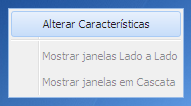
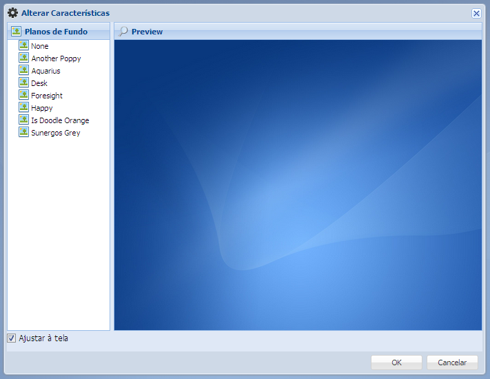

• Alterar Características
Para alterar as características do sistema, basta clicar no menu Funcionalidades e logo em seguida no botão Características ou no desktop do sistema clique com o segundo botão e escolha a opção Alterar Características.
1. Clique no botão Características ou Alterar Características


2. Abrirá uma nova janela

Selecione o plano de fundo que mais lhe agrada, selecione a opção Ajustar à tela caso deseje que o plano de fundo se ajuste as configurações do seu monitor e clique no botão Ok para realizar a alteração, caso deseja continuar com o padrão usado atualmente clique em Cancelar.